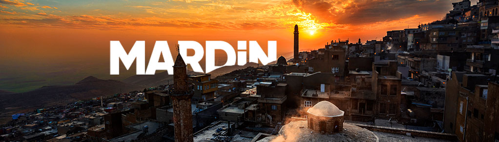

 Dicle Kalkınma Ajansı’nın merkez ilini oluşturan ve Dicle Bölgesi’nin yukarı Mezopotamya havzasında bulunan Mardin ilinin doğusunda Şırnak ve Siirt, kuzeyinde Diyarbakır ve Batman, batısında ise Şanlıurfa yer almaktadır. Uçsuz bucaksız tarım arazileri ve büyüleyici tarihi dokusu ile göze çarpan Mardin aynı zamanda Suriye ile de sınır komşusudur. Tarım ve tarıma dayalı sanayi, imalat sanayi, turizm, lojistik gibi sektörlere yönelik yatırımlarda son yıllarda gözle görülür bir artışın gözlendiği Mardin, çok kültürlü yaşam tarzı, tarihi dokusu, tarım arazileri, kamu yatırımları, konum, ulaşım ve birçok alanda yatırımcılara cazip imkânlar sunmaktadır. Mezopotamya’nın incisi Mardin yolculuğuna hazır mısınız? Bünyesinde çok sayıda değerli tarihi yapıları ve mekânları barındıran Mardin, adeta bir açık hava müzesini andırıyor. Bölgesinden çıkarılan taş ile yapılan ve her biri birer eşsiz mimarlık örneği olan dini ve geleneksel yapılarını dünya ile paylaşan Mardin, tümüyle ortaçağ’da olduğunuz hissini uyandıran nadide bir kentimizdir. 21 Cami ve Medrese, 16 Kilise ve Manastır, 2 Çarşı, 2 Hamam, 5 Kale, Konukevleri, Mağaralar ve 300’e yakın tescil edilmiş yaşayan tarihi ev. Kültür Envanterini oluşturan bu rakamlar ile Mardin, son yılların en belirgin turizm atağını gerçekleştirmiş olup 2001 yılından bu yana turist sayısını 50.000’lerden 1.000.000’a taşımıştır. Günübirlik ziyaretten hafta sonu tatiline dönüşen Mardin çıkartması son yılların en popüler ve tercih edilen turizm destinasyonları arasına girmiş durumdadır. Mardin işgücü açısından da avantajlı. Mardin nüfusunun %61’ini oluşturan 25 yaş altı genç nüfusun, yeni kurulan üniversitenin ve diğer kamu ve özel sektör eğitim kurumlarının da katkılarıyla giderek artan eğitilmiş işgücüne dönüşmesi, bunun yanı sıra işgücü maliyetlerinin de yeni teşvik sistemi ile birlikte Türkiye genelinin altında kalması, bölgeye gelecek yatırımcılar açısından uygun maliyetli ve kalifiye işgücü faktörünü oluşturmaktadır. Bu iki bileşeni aynı anda sunabilen Mardin insan kaynakları bakımından yatırımcılar için gerçek bir avantaj sağlamaktadır. Yeşil Deniz olarak da anılan ve halen ülkemizin en önemli tarımsal üretim merkezlerinden kabul edilen Mardin ovaları yakın bir gelecekte GAP suyunun ulaşması ile birlikte 1 milyon dekarlık sulu araziye kavuşacak böylece hem üretim miktarını hem de ürün kalitesini artıracaktır. Bereketli ovalarından çıkarılacak ürünler işlenecek fabrika ve yatırım olanakları sunmaktadır.